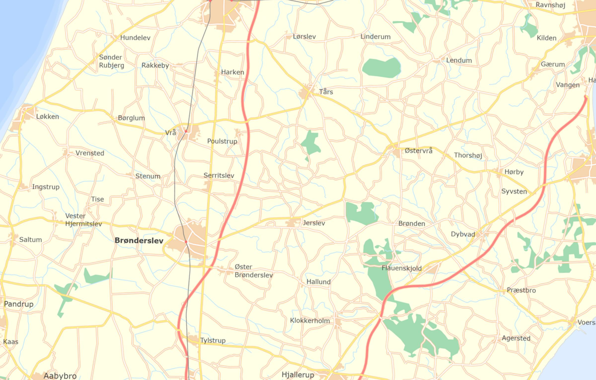

Nine generations of one family, from a farmhand in Sterup in the 1650s to a child born at Klæstrup in 1903. They never lived more than a day's walk apart. After a century and a half in Hellevad and Skæve, the line came back to Jerslev parish, where it began. Choose any name to read that person's life.
The oldest generation is at the top. Drag to move around, and pinch or use the buttons to zoom. Each card opens a biography with every birth, marriage and death that touched that person. A small dot marks the direct line. Brothers and sisters appear as chips under their parents.
Each pin is a farm, hamlet or church named in the records. Choose a pin to see who was born, married, lived or was buried there. The dashed arrows follow the direct line's moves, each labelled with about when it happened. Blue follows the father-to-son line from Sterup to Klæstrup. Red follows the mothers who married into it and the moves of their families. Tap a date to see who moved.

The farms at Lille Nejsum and Raunsholt are traced on their own page, Finding Lille Nejsum, and the Bøgh farm at Klæstrup on Finding the Bøgh Farm. Vester Mølle and the farm Hørkær in Kirkeskov have not been located on a modern map. Events there are shown at Jerslev church and Hellevad. Basemap: Danmarks Topografiske Kortværk, skærmkort, Klimadatastyrelsen open data. Place positions from the Danish place-name register.
The original entries behind the story, cut from the scanned registers and maps. Choose any image to enlarge it. Pinch, scroll or double-click to zoom.
Not in Jerslev or Vester Brønderslev, 1690 to 1707, nor in Øster Brønderslev and Hallund, 1700 to 1705. Hellevad and Hellum are lost from 1673 to 1732. Stenum, with Tolstrup, is the last neighbour to try.
Born about 1625, sixty years before the Jerslev register begins. A probate for him or his wife would prove he was the younger Peder's father.
Not found in Hellevad 1776 to 1778 or Skæve 1776 to 1779. The Ørum and Hellum pages of the Hellevad book are still to read.
The Klæstrup births and Christen Thomsen's 1850 birth are from the family record and still need checking against the registers.
Jerslev–Vester Brønderslev parish register from 1684, Hellevad–Ørum–Hellum register, Skæve register, and Øster Brønderslev–Hallund register from 1700 (Rigsarkivet, images via Danish Family Search and Arkivalieronline). Censuses of 1787, 1801, 1834, 1845 and 1850. Christian V's land register, 1688, Jerslev herred. Jerslev herred court books 1631 to 1688, extracts by Brejl. Full working notes, with image numbers for every record, are in FAMILY-RECORD.md. The family's last home, the Bøgh farm at Klæstrup, is found in Finding the Bøgh Farm. Simon Pedersen's farm is located in Finding Lille Nejsum. The search for Fredenborg, the house once thought to start this line, is told in Finding Fredenborg. That family turned out to be a different one.